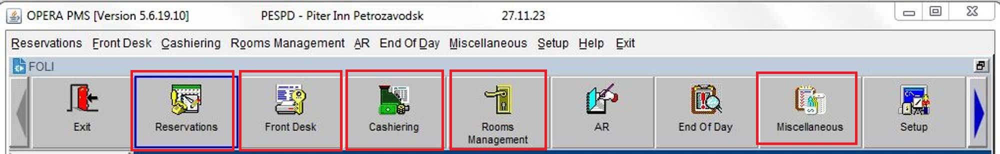

Верхняя панель OPERA PMS включает в себя несколько меню, но для начала работы вам потребуются только эти:
— Reservations;
— Front Desk;
— Cashiering;
— Rooms Management;
— Miscellaneous.
Выглядит это следующим образом:
Каждая из этих кнопок меню имеет свое подменю, которое открывается в левой части. Мы также пройдемся только по тем, что пригодятся в работе.
Вкладка Reservations включает в себя подменю:
— New Reservations - для создания нового бронирования;
—
Update Reservation - для поиска бронирования;
— Room Plan (Ctrl+F3) - шахматка;
— Registration Cards - для
печати большого количества регистрационных карт в день заезда, как правило, используется только под конец вечерней
смены.
— Arrivals - список гостей, которые заезжают сегодня;
— Room Assignment - для приписки номеров и заселения
групп.
Вкладка Cashiering включает в себя:
— Billing - список уже заехавших гостей, гостей на выезде и выехавших
сегодня гостей. Если открыть номер, то откроется окно счета номера с информацией об оплате проживания и доп.
услуг;
— Cashier Functions - для поиска и печати квитанций, счетов.
Вкладка Rooms Management включает в себя:
— Housekeeping - для изменения статуса номеров: чистый/грязный;
— Out of Order/Service - для закрытия номера с продажи под ранний заезд/поздний выезд/показ
номеров/ремонтные работы.
Вкладка Miscellaneous включает в себя:
— Reports - для поиска и печати необходимых отчетов;
— User
Activity Log - можно посмотреть всю активность сотрудника, кого заселил/выселил и т.д.
Стоит запомнить горячие клавиши: Shift+F3 (House Status), Ctrl+F2 (Detailed Aviability — обязательно ставить галочку “Include Non Deducted”), Ctrl+F3 (Room Plan), F3 (список готовых номеров).
При заселении пишем номер комнаты гостя и вкладываем ключ-карту.
Ключ-карта используется:
— В лифте. Чтобы подняться на этаж, необходимо в лифте вставить карту (стрелками
вперед, магнитной лентой вниз) и вынуть ее из картоприемника, после зеленого сигнала нажать номер этажа.
—
В номере. Чтобы открыть дверь номера необходимо воспользоваться картой, по аналогии с лифтом. В самом номере,
чтобы включить свет, необходимо вставить карту в картоприемник. При изъятии карты, электричество выключится.
— В ресторане. На ключ-карту записывается информация о питании. Карту необходимо предоставить сотруднику
ресторана при использовании включенного в тариф завтрака, обеда и/или ужина.
— Доступ к тренажерному залу и
игровой комнате тоже осуществляется с помощью карты.
При заселении гость расписывается за обработку персональных данных и ответственность за счет.